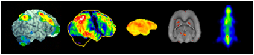
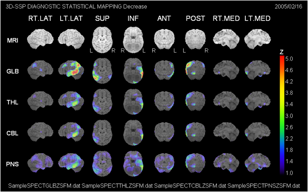
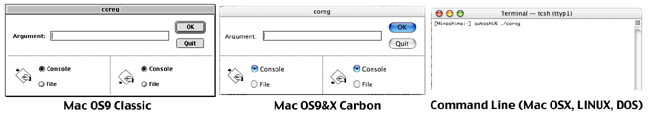

NEUROSTAT/3D-SSP

Neuroimaging and Biotechnology Laboratory (NIBTL)
Department of Radiology and Imaging Sciences, University of Utah, Salt Lake City, UT, U.S.A.
About NEUROSTAT
NEUROSTAT is a software library for neurological and biomedical image analysis that has been developed over the past 2 decades. The software has been used extensively by clinicians and investigators worldwide (40 countries as of 2015), and their results are published elsewhere. NEUROSTAT includes programs for both basic research applications (e.g., brain mapping studies, group comparison) and clinical research applications (e.g., three-dimensional stereotactic surface projections, 3D-SSP, for image interpretation, coregistration for ictal-interictal SPECT and MRI-PET/SPECT). Components of NEUROSTAT can be used for other types of biomedical imaging analyses (e.g., oncology imaging, autoradiographic image analysis). Custom software using NEUROSTAT library has been created by various investigators, and some of them are available in the public domain.
NEUROSTAT programs are provided free of charge to facilitate scientific applications and collaborations among investigators. However, please note that all programs are protected strictly by copyrights. No part of NEUROSTAT programs may be used, transferred, disassembled, or modified in any way without prior written permission. Although NEUROSTAT programs are provided free, investigations and publications concerning the programs themselves, i.e., program algorithms, programming styles, program coding, and program performance, are not permitted without prior written agreement.
Downloadable software in this page is a subset of the larger software library. If you have a specific request for certain types of programs or analyses, please contact us by e-mail regarding availability.
NEUROSTAT should not be relied upon to solve problems when an incorrect solution could result in injury to a person. The user assumes all risk and liability associated with the use of NEUROSTAT. The author of NEUROSTAT disclaims all liability for direct or consequential damages resulting from its use and makes no claims as to the reliability or fitness of NEUROSTAT for any particular use.
To run NEUROSTAT/3D-SSP, you are required to install a valid KEYCODE into the program folder. KEYCODE is provided free of charge and allows us to keep track of current users. You may copy KEYCODE for multiple copies of NEUROSTAT/3D-SSP installations. Please see the section below 'To use NEUROSTAT: KEYCODE'. A typical turnaround time for KEYCODE issuing is less than a week.
How to download NEUROSTAT/3D-SSP software
1) 3D-SSP Windows version with Graphical User Interface (Diagnostic Z-score mapping)
For those who are interested in 3D-SSP mapping of brain SPECT and PET imaging, you can use 3D-SSP software with Graphical User Interface (Windows) provided by Nihon Medi-Physics. Please click here "Graphical User Interface".
2) NEUROSTAT Command-line Software Library for MacOS, Windows Command Mode, and LINUX (Research Applications)
For those who are interested in NEUROSTAT programs for command-line operations, please click below. NEUROSTAT programs, including 3D-SSP, can be executed in a command line mode. NEUROSTAT supports multiple computer platforms and operation systems. To download NEUROSTAT, investigators need to download both ÔProgram FilesÕ AND ÔData FilesÕ (please see below). Please click here "NEUROSTAT Command-line Software Library".
3D-SSP Graphical User Interface (Windows version)
An English-version of graphical user interface (GUI) for 3D-SSP has been developed by Nihon Medi-Physics, Japan. This English version runs on a Windows system and tested on Windows XP as well as older version of Windows systems. We provide this GUI with various test normal databases (IMP, HMPAO, ECD, and, FDG).
a) Please click here (3D-SSP GUI Download) to download the GUI with 3D-SSP programs and test databases.
b) To install the GUI, 1) login as administrator; 2) place the downloaded zip file in the c:\Program Files directory and uncompressed (extract) files; 3) change properties (File->Properties) of the main folder (iSSP-NMP-us) and all the subfolders and filers to read/write/executable (uncheck all attributes and click ÔapplyÕ). Please note that if you are not using a standard Windows XP set up (e.g., if you cannot find c:\Program Files directory), you have to manually specific correct directory paths in the following files:
iSSP35.ini (main folder)
cnvttiff.prf (DocExec folder)
stereoSPECT.prf (DocExec folder)
stereoPET.prf (DocExec folder)
* Please note that installation on non-standalone workstations may require modifications of preference files.
c) Please request a valid ÔKEYCODEÕ (see above) and replace the old KEYCODE in the DocExec folder with a new one (either emailed or generated by ÔtypekeyÕ command).
d) Within the main folder, you will find 2 GUIs ÔiSSP35Õ and ÔiSSP35_Viewer.exeÕ. It is good to make shortcut for these 2 programs as well as folders Ô3DSSP-InputÕ and Ô3DSSP-OutputÕ and place them on the Desktop.
Please click ÔiSSP35.exeÕ to start the GUI. You can use a sample SPECT image in the folder ÒSampleSPECTÓ to test out the GUI. You can find a draft user manual in the ÒWin_iSSP&Neurostat_Manual_PDFÓ.
This GUI can read directly DICOM volume files. However, please note that PET (and MRI) DICOM files are often kept in multiple files of individual slices, instead of a single volume file (such as commonly used for SPECT DICOM format). These PET image sets need to be converted to a single binary file (or DICOM volume file) prior to the analysis by the GUI. Software, such as ImageJ (ÔImport Image SequenceÕ), can perform this conversion. By courtesy of Nihon Medi-Physics, Windows program ÔScomb.exeÕ is also provided to perform this conversion. Please click here (Scomb.zip) to download ÔScomb.exeÕ program and its documentation.
If you succeed the installation and test run, you should see the following output (using iSSP35_Viewer) for visual interpretation of SPECT or PET images.

NEUROSTAT Command-line Software Library (updated 12/18/2013)
For those who are interested in using NEUROSTAT command-line software library, you will need to download both 1) Program Files and 2) Data Files below.
1) Program Files
NEUROSTAT is available on the following platforms.
Mac
Mac OS9 & OSX Carbon (GUI or Command line)
Linux
SunOS (old Sparc Station)
Windows Command Line/DOS
DEC (upon request)
To download, please click the program archive for your platform.
a) Mac OSX Mach-O is a version compatible with a UNIX terminal on Mac OSX (pre-Lion OS). "Mac OSX Lion" is a version compatible with Mac OSX Lion. DOS (Windows) is a version compatible with a MS-DOS and Command Prompt terminal on Windows. We encourage investigators to use these command-line based programs on Macintosh and PC because image analyses can be fully automated by creating shell and batch files. LINUX, SUN OS, and DEC are also command-line based.
b) .sit and .zip files can be uncompressed by the operation system software or freeware such as Stuffit Expander.
c) For SUN OS, please use uncompress SUNOS.zip first, and then tar xvpf SUNOS to unarchive programs.
d) For LINUX, please use gunzip LINUXRedHat8.gzÕ first, and then tar xvpf LINUXRedHat8 to unarchive programs.
Please create a folder or directory (e.g., NEUROSTAT) and place all programs in this folder or directory.
2) Data Files
NEUROSTAT uses several data files. Some of these files are platform specific. Text files are also specific to the platforms.
DEC (upon request)
To download, please click the data archive for your platform.
a) .sit and .zip files can be uncompressed by the operation system software or freeware such as Stuffit Expander.
b) For SUN OS, please use uncompress DATASUNOS.Z first, and then tar xvpf DATASUNOS to unarchive programs.
c) For LINUX, please use gunzip DATALINUXRedHat.gz first, and then Ôtar xvpf DATALINUXRedHat to unarchive programs.
Please place all data files in the same directory created for the NEUROSTAT program files.
3) Image Display Software
NEUROSTAT does not provide software for image 'display' or observer-dependent image analysis routines.
Images processed by NEUROSTAT are generally in a simple binary format (default, signed short integer, image matrix and pixel sizes described in a header). These images can be viewed by common image display / analysis software such as Image J (NIH). Alternatively, there are several commercial software packages that can display images in various image formats.
NEUROSTAT also includes a binary-tiff conversion program (cnvttiff). Images processed by NEUROSTAT can be converted to TIFF files that can be viewed by a default image viewer provided for each computer platform.
It is also straightforward to write image-format conversion programs for NEUROSTAT so that resulting images can be reconverted to their original format. Reconverted images can, then, be displayed on the original imaging workstation. Conversion programs for CTI6 format (a format being used for Siemens/CTI PET scanner) are included (cnvtbic6 & cnvtc6bi).
Data files created by NEUROSTAT are generally in simple text format. The content of these files can be viewed by a common text editor, word processor, or spreadsheet program and edited for further analyses.
To use NEUROSTAT: KEYCODE
For the purpose of regular software updates and user communication, NEUROSTAT programs require a valid KEYCODE. Please send keycode requests to NEUROSTAT KEYCODE with the following information.
1) Name of the institution to be registered
2) Name of the primary investigator (or contact person)
3) Title of the primary investigator
4) Affiliation (i.e., department) of the primary investigator
5) Mailing address
6) Phone number
7) Fax number
8) Email address
9) Computer platform & Operating system
In return, you will receive a set of numbers or a binary KEYCODE file by e-mail in a few days. The program typekey uses these numbers to generate a KEYCODE file specific to your institution.
To create a KEYCODE file, change the current directory to the program directory created above. To start the keycode generation program typekey, please type,
In the TERMIAL window (Mac OSX, LINUX, and SUN OS),
./typekey [RETURN]
In the DOS prompt (DOS, Windows Command Prompt),
typekey.exe [RETURN]
For Mac OS9 GUI (Classic or Carbon),
Click the program icon ÔtypekeyÕ
The following message will appear on the screen.
OUTPUT
TYPE-IN KEYCODE FILE (Version x)
(opening message)
Input codes. [-1] to finish.
Please type in each number provided in the e-mail and hit [RETURN] after each number. When you finish typing in all numbers, type -1 and then hit [RETURN] to finish.
EXAMPLE
Input codes. [-1] to finish.
23 [RETURN]
100 [RETURN]
16 [RETURN]
.
.
.
.
-1 [RETURN]
This will create a KEYCODE file in the program directory. You can confirm the creation of the file by listing files in the program directory (For Mac OSX, LINUX, and SUN OS, type ls. For MS-DOS, type dir. For Mac OS9, simply check the content of the program folder by opening it). If you would like to create multiple copies of the program directory (either on the same workstation or different workstation), you must create this KEYCODE file for each program directory. This can be done either by simply copying the existing KEYCODE file or by running ÔtypekeyÕ program again in each new directory.
To begin NEUROSTAT
For users who would like to use the GUI version of 3D-SSP for human brain SPECT and PET, please see the section Ò3D-SSP Graphical User InterfaceÓ.
The NEUROSTAT programs consist of executable program files, preference files, and data files. The preference files for each program (if required) will be created automatically when the program is executed for the first time. Preference files determine the behavior of the programs and can be modified by the investigator. The programs, preference files, and data files are stored preferably together in the dedicated program directory (or folder) created above. However, customized preference and data files can be stored in individual investigatorsÕ directories, different from the program directory and specified by an option -p for a custom preference file. This function will be discussed in detail in the NEUROSTAT manual.
To create preference files of all programs at once, there is a batch file init.bat included in the Data Files for the platforms, Mac OSX, LINUX, SUN OS, and DOS-Window. For Mac OS9 (GUI), the investigator has to click each program icon manually.
Before running this batch file on Mac OSX, LINUX, and SUN OS, please change a file permission to executable
chmod +x init.bat [RETURN]
To run the batch file, type
./init.bat [RETURN]
(or init.bat without ./ for DOS)
You can confirm all preference files including GLOBAL.prf created by this batch process. These preference files can be viewed using a text editor.
To execute NEUROSTAT programs
NEUROSTAT programs on Mac OSX, LINUX, SUN OS, DEC, and DOS (Windows Command Prompt) are command-line based. This means that investigators can perform a program or a combination of programs in a TERMINAL or Command Prompt windows. For Mac OS9 (Classic and Carbon), a simple graphical user interface is provided since Mac OS9 operation system does not support a TERMINAL or Command windows.

a) For Mac OS9 (Classic or Carbon), please click a program icon. This will evoke a small GUI window (see above). The investigator can type in command-line parameters in the ÔArgumentÕ window and then click [OK] to execute the program. If [OK] is clicked without arguments, the program will print out the instruction for command-line arguments and options available for the program.
There are two programs, batchjobber and batchwait, provided specifically for Mac OS9 platform. These programs allow investigators to use text scripts that execute sequentially multiple programs in the Mac OS9 environment. Please see the NEUROSTAT manual how to use these programs.
b) For a command-line based platform (Mac OSX, SUN OS, LINUX, DEC, and DOS-Windows Command Prompt), type a program name followed by arguments for the program and, then, [RETRUN] to execute the program. For example, to run coreg program,
For Mac OSX, SUN OS, LINUX, and DEC,
./coreg spect1.img spect2.img output [RETURN]
For DOS-Windows Command Prompt,
coreg.exe spect1.img spect2.img output [RETRUN]
Please note that there is ./ in front of the program name on UNIX-based command line (this can be omitted on some platforms), and .exe at the end of the program name on DOS-Window Command Prompt.
To test run NEUROSTAT
In the Data Files, there are imaging data included for a test run of NEUROSTAT programs. A shell file, ssp_bin is provided for the command-line based platforms including Mac OSX, LINUX, SUN OS, DEC, and DOS-Window. Unfortunately, this test script cannot be used on Mac OS9 (however, it is possible to write a similar script and use batchjobber to execute).
To run this test script, please type the following command in the TERMIAL (or Command Prompt) window.
./ssp_bin testspectB [RETURN] (UNIX-based)
or
rename 'ssp_bin' to 'ssp_bin.bat' (rename ssp_bin ssp_bin.bat)
ssp_bin.bat testspectB [RETURN] (DOS-Windows Command Prompt)
This will analyze sample imaging data, testspectB.img (and a corresponding header file, testspectB.hdr), using 3D-SSP routines and write out several TIFF files as results. TIFF files can be viewed by a common image viewer provided for each platform.
The content of ssp_bin can be viewed using a text editor. This will provide an example of NEUROSTAT scripts. Complex or repeat image analysis tasks can be completely automated by writing a text script for NEUROSTAT programs. The analyses can then be incorporated in various applications and routine image processing.
Further reading
The most recent (but outdated) manual for the command-line version of NEUROSTAT can be downloaded for your reference ("Neurostat Manual"). Please note that some descriptions are outdated in this manual.
To contact us
For questions regarding NEUROSTAT programs, please contact us by email. For trouble shooting, please attach a screen capture or an output message from the program, if possible. Further information regarding NEUROSTAT/3D-SSP programs will be provided through this web page.
Happy Data Analysis!